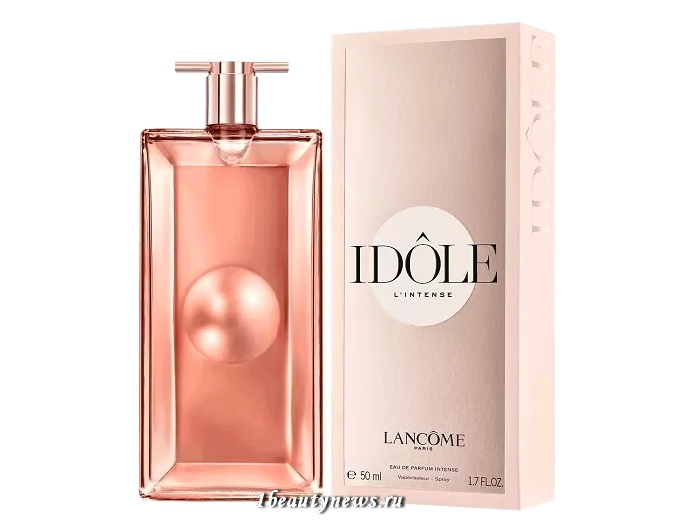
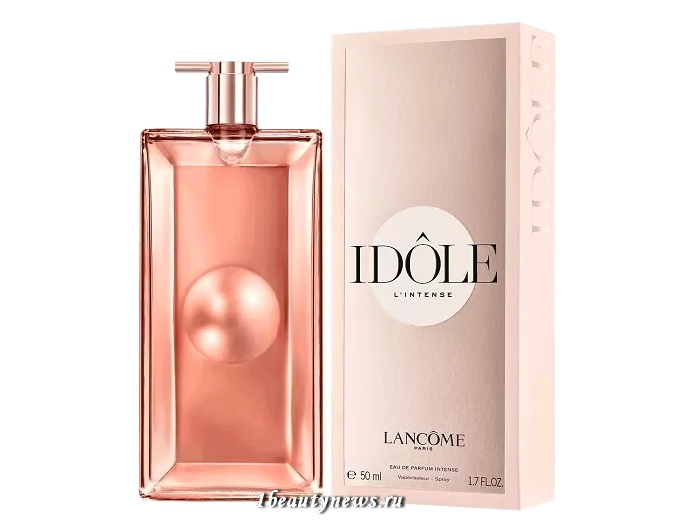

Idole L'Intense от Lancome У Lancome выходит новый аромат Idole L'Intense. Это более интенсивная и яркая версия вышедшего в прошлом году аромата Idole. Новинка представляет собой чувственный и элегантный шипрово-цветочный аромат для женщин, подчеркнутый букетом пудровых, цитрусовых и цветочных нот. Он начинается цитрусовыми нотами бергамота, апельсина и мандарина. Цветочные ноты сердца раскрываются жасмином и розой, а в базе аромат переходит в глубокие древесные, пряные и цветочные ноты ванили, кашемирового, кедрового и сандалового дерева, пачули и акации. Самый тонкий флакон в мире – толщина флакона всего 15 мм, созданный благодаря техническому мастерству и передовому подходу к дизайну. Постоянное напоминание о бесконечных возможностях, которые превосходят самые смелые мечты.  В основе IDOLE L’INTENSE три составляющие, которые раскрывают естественную красоту цветов. Роза нового поколения, выращенная в особых условиях и отобранная для этого аромата. Безупречный жасмин придает аромату бархатистость. Притягательные ноты бурбонской ванили добавляют утонченности и женственности этому аромату. В сердце IDOLE L’INTENSE лежит уже знакомый "аккорд чистоты", дополненный более чувственной и выразительной шипрово-цветочной нотой. Манящие текстуры наслаиваются друг на друга, делая аромат настоящим объектом желания. Новый аромат Lancome Idole L'Intense 2020 скоро выйдет в международную продажу. Ориентировочная цена — €60 (25 мл), €105 (50 мл), €125 (75 мл). СКОРО В ПРОДАЖЕ!
У Lancome выходит новый аромат Idole L'Intense. Это более интенсивная и яркая версия вышедшего в прошлом году аромата Idole. Новинка представляет собой чувственный и элегантный шипрово-цветочный аромат для женщин, подчеркнутый букетом пудровых, цитрусовых и цветочных нот. Он начинается цитрусовыми нотами бергамота, апельсина и мандарина. Цветочные ноты сердца раскрываются жасмином и розой, а в базе аромат переходит в глубокие древесные, пряные и цветочные ноты ванили, кашемирового, кедрового и сандалового дерева, пачули и акации.
Самый тонкий флакон в мире – толщина флакона всего 15 мм, созданный благодаря техническому мастерству и передовому подходу к дизайну. Постоянное напоминание о бесконечных возможностях, которые превосходят самые смелые мечты.

В основе IDOLE L’INTENSE три составляющие, которые раскрывают естественную красоту цветов. Роза нового поколения, выращенная в особых условиях и отобранная для этого аромата. Безупречный жасмин придает аромату бархатистость. Притягательные ноты бурбонской ванили добавляют утонченности и женственности этому аромату. В сердце IDOLE L’INTENSE лежит уже знакомый "аккорд чистоты", дополненный более чувственной и выразительной шипрово-цветочной нотой. Манящие текстуры наслаиваются друг на друга, делая аромат настоящим объектом желания.
Новый аромат Lancome Idole L'Intense 2020 скоро выйдет в международную продажу. Ориентировочная цена — €60 (25 мл), €105 (50 мл), €125 (75 мл).
СКОРО В ПРОДАЖЕ!